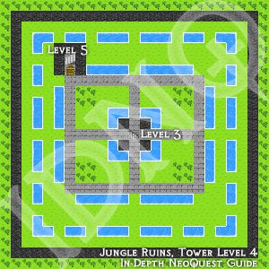

NeoQuest Maps
Helping you find your way around NeoQuest...
| Jungle Ruins, Tower Level 4  A garden this high up? |
Available maps for NeoQuest I:
- Ancient Neopia: Shows most of the Neopian surface but not any of the nested areas.
- Ancient Neopia, North: You start at the city, then work your way through the Dank Cave and Jungle ruins. After that, visit the Swamp Edge City to the west.
- Dank Cave, Level 1: Move along, move along...
- Dank Cave, Level 2: (Upper Temple level)
- Dank Cave, Level 3: (Lower temple)
- Dank Cave, Level 4: (Maze & Xantan's Lair) Fight the Skeleton Guards in Xantan's Lair to get items required for new armor.
- Jungle Ruins, Base Level: Go downstairs, fight Krei and Gors, return upstairs to upgrade your weapon, and then go back down to take the Medallion from Rollay.
- Jungle Ruins, Dungeon Level 1: Fight Krei (XP+NP), then use the teleporter behind him to return the start of the level, and continue downstairs.
- Jungle Ruins, Dungeon Level 2: Before going further down, use the teleporter maze to get to (and fight) Gors.
- Jungle Ruins, Gors' Garden: Fight Gors, then go upstairs to Tower Level 1 to upgrade your weapon with Denethir.
- Jungle Ruins, Tower Level 1: Home of Denethir, the wand maker.
- Jungle Ruins, Dungeon Level 3: It's HUGE! Fight Rollay to recieve a useful item.
- Jungle Ruins, Tower Level 2: Keys and mazes. No serious difficulty here, and it's pretty much a storyline tour (you can freely skip this and the upper levels).
- Jungle Ruins, Tower Level 3: Keys and mazes. No serious difficulty here, and it's pretty much a storyline tour (you can freely skip this and the upper levels).
- Jungle Ruins, Tower Level 4: A garden this high up?
- Jungle Ruins, Tower Level 5: Korabric explains the story (you can talk to Pommana after this to hear more if you're completely nuts). The teleporter leads to the base level.
- Ancient Neopia, West: Fight a bit around the desert and hills to scavenge the items nescersary for the Swamp Edge City upgrades. Then adventure in the Temple of Roo before passing the Techo Caves and heading east.
- Temple of Roo, Level 1: Pretty large. Talk to Erick, he's interesting.
- Temple of Roo, Level 2: The Archmagus of Roo is a tough boss. Collect the keys (in sequence) from unique monsters in the rooms to get to him.
- Techo Cave 1: Mr. Irgo provides an armor upgrade for a few items found around the caves.
- Techo Cave 2: Transit to Sunny City (Joins caves 1 and 4).
- Techo Cave 3: Transit to Mountain Fortress (Cave 6) and SE Neopia (Cave 7). Cave 5 is a dead end.
- Techo Cave 4: Transit to Sunny City (from Cave 2).
- Techo Cave 5: You shouldn't need this one.
- Techo Cave 6: Transfer to Mountain Fortress, the source of your final weapon/armor upgrades.
- Mountain Fortress: Fight the guardians for XP (and NP), as well as the final weapons. Monsters here drop the final armor upgrade.
- Techo Cave 7: Transfer to South East Neopia, the "last" part of the game.
- Ancient Neopia, Southeast: The latter part of the game. Go to Kal Panning (Faelinn) for the key to the Two Rings, and then fight the boss(es) there.
- Kal Panning (initial): Find and fight Faelinn.
- Kal Panning (restored): The City after your fight (there are no monsters anywhere).
- Two Rings Cave: The passage of no return.
- Two Rings Palace, Level 1: Go ahead, fight your way through the final levels.
- Two Rings Palace, Level 2: Last level with monsters.
- Two Rings Palace, Level 3: And the Boss behind it all is... (really?)